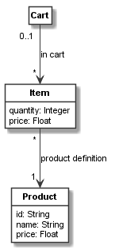

A first class model¶
Defining a class model¶
In this and the next sections, we create a simple domain model for a shopping cart, items in the carts, and products defining the items as a class model. Please note that the domain model in this and the next sections are inspired by the model at: https://www.uml-diagrams.org/examples/online-shopping-domain-uml-diagram-example.html. In Codeable Models a simple excerpt of such a model can be created with the following code:
cart = CClass(domain_metaclass, "Cart")
item = CClass(domain_metaclass, "Item", attributes={
"quantity": int,
"price": float
})
product = CClass(domain_metaclass, "Product", attributes={
"id": str,
"name": str,
"price": float
})
cart_item_relation = cart.association(item, "in cart: [cart] 0..1 -> [item in cart] *")
item_product_relation = item.association(product, "product: [cart item] * -> [product] 1")
In the model, we first define a class named Cart as an instance of the domain_metaclass
meta-class and assign its Python object to cart. This is done using CClass.
Next, we define two other classes Item
and Product in the same way. They additionally have attributes, which are defined using an
attributes dictionary. Both define various class attributes based on standard Python data
types such as int, float, or str.
In the last two lines, we define two associations between the classes. The first one associates
a cart to items with role name cart for the Cart side of the association, and role name
item in cart for the Item side of the association. The association has the label in cart.
The cart side has the cardinality 0..1 whereas the items have the cardinality *.
Likewise a second association from items to a product is defined with label product definition,
role name cart item and cardinality * for the carts, and role name product and
cardinality 1 for the product.
Imports¶
In order to make the model above run, we need to import some elements from Codeable Models at the beginning of the script:
from codeable_models import CClass
from metamodels.domain_metamodel import domain_metaclass
The first line imports CClass used for any kind of class definition, and the second line
imports domain_metaclass, a common meta-class to be used in simple domain models such as the
one above. Most simple domain models do not need much more meta-modelling than this, as any
meta-model can reuse all Codeable Models class features such as associations, attributes,
inheritance, and so on.
Please note that alternatively we simply could have defined the meta-class like this:
domain_metaclass = CMetaclass("Domain Class")
This statement creates a new meta-class (using CMetaclass)
with the name Domain Class. It assigns the Python
object representing the meta-class to the variable domain_metaclass. The same and some other
definitions are performed in the model metamodels.domain_metamodel, which we import
(see also Domain Metamodel).
Generating a UML class model visualization¶
Next lets do something useful with our coded model. Codeable Models comes with renderers for
class and object models based on PlantUML. Here, we want to use the class model renderer to generate a
UML visualization of the model above. For this we need to define the subset of the model we
want to render. This is necessary as most models are much larger than three classes, and visualizations
usually should present digestible views of the whole model. This can be done by defining a
group of classes that should get rendered. Groups of classes can be defined using CBundle.
Here, in this small model, we want to define a bundle containing all classes, which can be done by
selecting any of the classes defined above and call get_connected_elements() on it:
shopping_model = CBundle("shopping_model", elements=cart.get_connected_elements())
Finally, we need to instantiate the Plant UML generator and generate a class model using it:
generator = PlantUMLGenerator()
generator.generate_class_models("shopping_model", [shopping_model, {}])
Please note that we pass the bundle as a list followed by an empty dictionary, as usually we may want to render more than one class model view at once (thus the list), and to some of those views we may want to pass configuration parameters (which would be done in the dictionary).
Finally, we need to import CBundle and PlantUMLGenerator, too. The resulting complete script is:
from codeable_models import CClass, CBundle
from plant_uml_renderer import PlantUMLGenerator
from metamodels.domain_metamodel import domain_metaclass
cart = CClass(domain_metaclass, "Cart")
item = CClass(domain_metaclass, "Item", attributes={
"quantity": int,
"price": float
})
product = CClass(domain_metaclass, "Product", attributes={
"id": str,
"name": str,
"price": float
})
cart_item_relation = cart.association(item, "in cart: [cart] 0..1 -> [item in cart] *")
item_product_relation = item.association(product, "product: [cart item] * -> [product] 1")
shopping_model = CBundle("shopping_model", elements=cart.get_connected_elements())
generator = PlantUMLGenerator()
generator.generate_class_models("shopping_model", [shopping_model, {}])
This script will generate the following UML class model:
The full code of the example in this tutorial can be found in the sample Shopping Model 1.